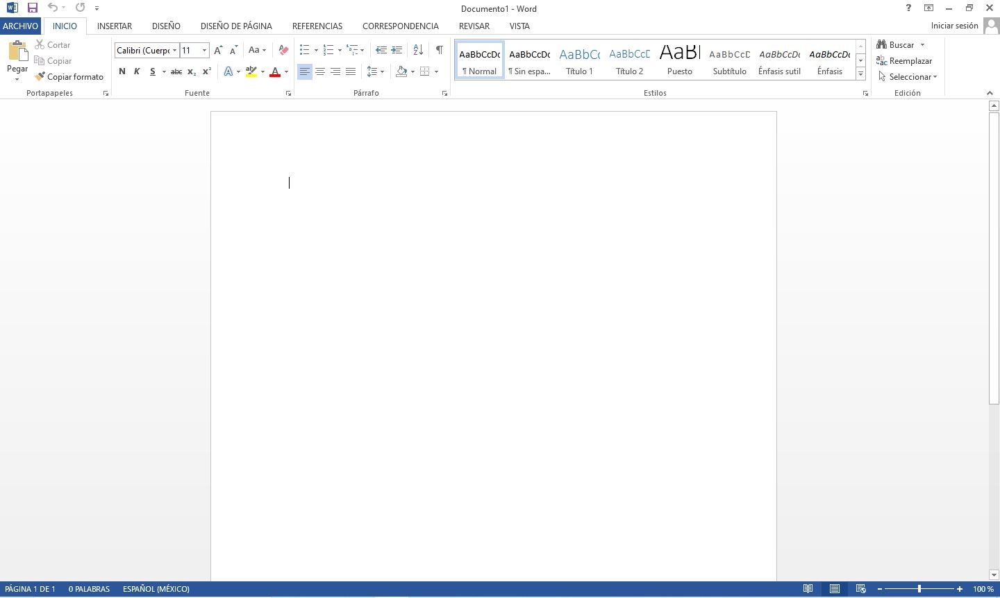

La ventana de Microsoft Word

Barra de herramientas de acceso rápido:
Barra de título:
Cinta de opciones:
Barras de desplazamiento:
Zoom
- Puedes pulsar directamente el valor porcentual (que normalmente de entrada será el tamaño real, 100%).
Se abrirá una ventana donde ajustar el zoom deseado.
- O bien puedes deslizar el marcador hacia los botones - o + que hay justo al lado, arrastrándolo.
Vistas del documento:
Barra de estado:
Cinta de opciones
La cinta de opciones es la barra más importante de Word, porque contiene todas las opciones que se
pueden realizar con los documentos.
- Las herramientas están organizadas en pestañas o fichas (Inicio, Insertar, Vista...),
que a su vez están divididas en grupos
- Algunos grupos de herramientas de la cinta disponen de un pequeño botón en su esquina inferior derecha:
Este botón abre un panel o cuadro de diálogo con más opciones relacionadas con el grupo en cuestión.
Observaciones:
- Las pestañas pueden estar disponibles o no. La cinta tiene un comportamiento "inteligente", que consiste en
mostrar determinadas pestañas únicamente cuando son útiles, de forma que el usuario no se vea abrumado por una
gran cantidad de opciones. Por ejemplo, la ficha Herramientas de tabla no estará visible de entrada, únicamente
se mostrará si insertamos una tabla en nuestro documento y la seleccionamos.
- Ésta función permite una mayor comodidad a la hora de trabajar, pero si en algún momento queremos
ocultar o inhabilitar alguna de ficha de forma manual, podremos hacerlo desde el menú Archivo > Opciones >Personalizar Cinta de opciones,
o pulsando con el botón derecho sobre la cinta de opciones y elegiendo Personalizar Cinta de opciones.
- Pulsando la tecla ALT entraremos en el modo de acceso por teclado. De esta forma aparecerán pequeños
recuadros junto a las pestañas y opciones indicando la tecla (o conjunto de teclas) que deberás pulsar para
acceder a esa opción sin la necesidad del ratón.
Mostrar/Ocultar la cinta de opciones.
Si haces doble clic sobre cualquiera de las pestañas, la barra se ocultará, para disponer de más espacio de
trabajo. Las opciones volverán a mostrarse en el momento en el que vuelvas a hacer clic en cualquier pestaña.
También puedes mostrar u ocultar las cintas desde el botón ocultar y mostrar pestañas de la zona derecha
superior que abirá la ventana que se muestra a continuación, con tres opciones:
Ficha archivo
La pestaña Archivo se encuentra destacada en color azul. Porque, a diferencia del resto de pestañas,
no contiene herramientas para la modificación y tratamiento del contenido del documento, sino más bien
opciones referentes a la aplicación y al archivo resultante. Al situarnos en esta pestaña, se cubre el documento
con un panel de opciones, es por ello que Microsoft ha llamado a esta vista la Vista Backstage.
- La principal característica de la ficha Archivo es que para cada comando de la parte izquierda aparecen unas
opciones en la parte central, y a su vez, para cada una de estas opciones aparecen otras opciones más en la parte
derecha de la pantalla. Por ejemplo, en la imagen vemos como el comando Abrir genera las opciones Documentos
recientes, SkyDrive, ... y al seleccionar Documentos recientes aparece una lista con varios documentos recientes.
- Otra particularidad es la presencia del botón botón atrás
 para volver atrás que sólo aparece en la ficha Archivo.
para volver atrás que sólo aparece en la ficha Archivo.
Guardar, abrir y cerrar documentos
Guardar documentos
Lo que se escribe se va almacenando en la memoria de tu ordenador; si el ordenador se apagara accidentalmente,
se perdería y no lo podrías recuperar. Con el comando Guardar quedará grabado en el disco duro del ordenador (o en un dispositivo externo, como una memoria usb) de forma permanente.
Haz clic en el icono Guardar  de la zona superior izquierda o pulsa las teclas CTRL+G y aparecerá una ventana similar a esta.
de la zona superior izquierda o pulsa las teclas CTRL+G y aparecerá una ventana similar a esta.
Aquí debes elegir en qué unidad guardas el archivo, para guardarlo en el disco duro de tu ordenador selecciona Equipo y pulsa el botón Examinar para que se abra un cuadro de diálogo como el siguiente.
Para guardar un documento debes indicar el nombre con el que lo quieres guardar, el tipo de documento que estás guardando
y la carpeta que contendrá tu documento:
- El nombre lo indicamos en el campo Nombre de archivo.
- El tipo del documento para los documentos Word será Documento de Word, que ya viene escrito por
defecto.
Observación:
Los documentos dentro del disco duro están organizados en carpetas. Por defecto normalmente
se guardarán en la carpeta Mis documentos. Pero siempre podrás elegir otra carpeta o incluso, como comentábamos,
guardarlo en un disco extraíble.
Una vez hayas definido los tres aspectos, deberás hacer clic en el botón Guardar. La barra de título indicará
el nombre que le hayas dado en lugar de Documento1.
Cerrar documentos
Después de guardar un documento, Este continúa en nuestra pantalla y podemos seguir trabajando con él. Una vez
que hemos acabado de trabajar con un documento debemos cerrarlo.
Para cerrar un documento hacer clic en el botón Archivo , y luego hacer clic en Cerrar. Si hemos hecho alguna
modificación en el documento desde la última vez que lo guardamos, nos preguntará si queremos guardar los
cambios; contestar que Sí. Al cerrar el documento veremos cómo este desaparece de la pantalla y vemos el fondo
gris de la ventana Word. El programa sigue abierto, permitiéndonos crear un nuevo documento o abrir uno
existente.
Abrir un documento
Para utilizar un documento que tenemos guardado debemos abrirlo. Para ello hacer clic en la pestaña Archivo
 y seleccionar la opción Abrir, o bien pulsar las teclas CTRL+A. Aparecerá una ventana similar a la que
vemos aquí.
y seleccionar la opción Abrir, o bien pulsar las teclas CTRL+A. Aparecerá una ventana similar a la que
vemos aquí.
Para abrir un documento de los que se muestran en la columna Documentos Recientes, basta con hacer clic
sobre él. Si el documento que queremos abrir no se encuentra en esa lista podemos hacer clic en Equipo.
Ahí podremos hacer clic en una de las carpetas que se muestran o hacer doble clic sobre el documento que
deseamos abrir.
Para abrir un archivo de los que aparecen en la ventana lo hemos de seleccionar haciendo clic sobre él
(quedará marcado de color azul) y luego pulsar en el botón Abrir. Otra forma más rápida de abrir el documento
es haciendo doble clic sobre él. Inmediatamente el documento aparecerá en nuestra pantalla.
Cerrar Microsoft Word
Una vez hemos acabado de trabajar con Word debemos cerrarlo. Para ello, podemos realizar cualquiera de
las siguients acciones:
- Hacer clic en el botón Archivo y eligir la opción Cerrar, como se puede
apreciar en la siguiente imagen:
- Utilizar la combinación de teclas rapida para cerrar la aplicación: ALT+F4.
- La forma más usual de cerrar el programa es la misma que con la mayoría de ventanas en Windows,
presionar
 en la esquina superior derecha del programa:
en la esquina superior derecha del programa: 
Mi primer documento en Microsoft Word
Títulos, subtítulos y párrafos
- En el documento podemos definir qué texto es el título, cuál el subtítulo, y cuál los párrafos
de contenido. Ésta distinción no es únicamente estética, sino que ayuda a Word a hacerse una idea de la
estructura del documento y esto a la larga nos ayudará en nuestro trabajo. Un documento bien estructurado
siempre es más sencillo de manejar, facilitando por ejemplo la posterior creación de índices.
En la pestaña Inicio > Estilos, encontramos un cuadro que nos permite elegir el tipo de texto que vamos
a introducir.
-
Si pulsas Título 1 y a continuación escribes algo, se considerará que el texto introducido es un título.
De alguna forma es como etiquetar cada uno de los elementos del archivo.
-
Al pulsar Enter, Word asumirá que quieres cambiar de elemento y pasará al formato Normal. Pero siempre puedes
cambiarlo, por ejemplo, para elegir insertar un Título 2 (que supone un nivel más bajo en la jerarquía estructural) para incluir un subtítulo.
Punto de inserción y cursor (puntero)
- El punto de inserción es una pequeña barra vertical parpadeante
 que
marca tu posición en el texto y donde esté situada es donde se introducirá el texto que teclees. Va avanzando
conforme vayas escribiendo. El cursor tiene esta forma cuando está dentro del área de texto, la cual esta delimitada por
las reglas.
que
marca tu posición en el texto y donde esté situada es donde se introducirá el texto que teclees. Va avanzando
conforme vayas escribiendo. El cursor tiene esta forma cuando está dentro del área de texto, la cual esta delimitada por
las reglas.
- El cursor por otro lado aparece cuando se está encima de los menús, o fuera del area las reglas.
Observaciones:
- No confundas el punto de inserción con el puntero del ratón.
- Cuando mueves el ratón, lo que estás moviendo es el puntero; cuando pulsas las teclas de dirección del teclado,
mueves el punto de inserción.
- Escribir un primer documento en Word básicamente se trata de teclear el texto y controlar siempre dónde está
situado el punto de inserción.
Dezplazamiento
Cuando estamos viendo un documento Word que no cabe en una pantalla, necesitaremos movernos por el documento para colocarnos en la parte que nos interese.
Desplazamientos cortos dentro de una misma pantalla:
Ratón:
Desplazar el cursor del ratón hasta el punto elegido y hacer clic, el punto de inserción se
colocará en ese lugar.Teclas de dirección:
Las teclas izquierda/derecha desplazan el punto de inserción una posición a la
izquierda/derecha, y las teclas arriba/abajo desplazan el punto de inserción una línea arriba/abajo.
La tecla FIN nos lleva al final de la línea y la tecla INICIO al principio de la línea.
| Para desplazarse |
Presione las teclas |
| Una palabra a la izquierda |
CTRL + flecha izquierda |
| Una palabra a la derecha |
CTRL + flecha derecha |
| Un párrafo arriba |
CTRL + flecha arriba |
| Un párrafo abajo |
CTRL + flecha abajo |
Desplazamientos a lo largo de todo el documento:
Teclas AvPág y RePág. Estas teclas avanzan y retroceden una pantalla completa. Observad que no es lo mismo una
pantalla que una página. El tamaño de la pantalla lo limita el monitor mientras que la longitud de la página
la definimos nosotros.
| Para desplazarse |
Presione las teclas |
| Una página adelante |
CTRL + AvPág. |
| Una página atrás |
CTRL + RePág. |
| Al principio del documento |
CTRL + Inicio |
| Al final del documento |
CTRL + Fin |
Mediante las Barras de desplazamiento
Las barras de desplazamiento permiten movernos a lo largo y ancho del documento de forma gráfica.
La longitud de barra de desplazamiento vertical representa la longitud del documento y el cuadrado
pequeño que hay en su interior representa la posición actual del punto de inserción.
- Haciendo clic en cualquier posición por encima/debajo del cuadro nos desplazaremos una pantalla
hacia arriba/debajo del documento.
- Arrastrando el cuadro nos desplazaremos proporcionalmente a la posición en la que lo movamos.
- Mediante las flechas. Si hacemos clic en la flecha o triángulo de la parte
 Subir superior/inferior
Bajar
nos desplazaremos una línea hacia arriba/abajo. Si mantenemos pulsada la flecha nos desplazaremos línea
a línea de forma rápida hasta que la soltemos.
Subir superior/inferior
Bajar
nos desplazaremos una línea hacia arriba/abajo. Si mantenemos pulsada la flecha nos desplazaremos línea
a línea de forma rápida hasta que la soltemos.
Las barras de desplazamiento horizontal. Permiten movernos de forma similar a como acabamos de ver con la barra
vertical pero en sentido horizontal, es decir, permiten desplazar el documento hacia la derecha y hacia la izquierda.
Se utilizan menos porque es menos frecuente que el documento sea más ancho de lo que cabe en una pantalla.
Panel de navegación
En la barra de estado, al hacer clic sobre la zona de la izquierda, donde aparece el número de página, se abre un panel
de Navegación similar a la que puedes ver en esta imagen.
Tiene tres pestañas para navegar por:
- El índice con los títulos que se generan automáticamente al insertar títulos en el documento.
Haciendo clic en un apartado de ese índice nos desplazaremos a la parte del documento que lo contiene.
- Por miniaturas de las páginas.
- Por resultados de la búsqueda que hemos realizado utilizando la caja de búsqueda que hay justo encima.
También podemos abrir el panel de navegación desde la pestaña Vista, opción Panel de navegación, como se muestra en la imagen.
Ir a.
Cuando el documento es muy extenso, puede resultar incómodo realizar el desplazamiento de las formas
que hemos visto. Imagina que estás trabajando con un documento de 500 páginas y quieres ir a la página
50. Sería una pérdida de tiempo ir página a página. En esas ocasiones resulta resulta muy practico
utilizar la opción Ir a. Esta opción se encuentra en:
Pestaña Inicio > grupo Edición > menú Buscar > Ir a .
Tambien podemos emplear la combinación de teclas CTRL + I o bien haciendo clic
en Página ## de ## en la barra de estado
A la izquierda puedes seleccionar dónde quieres ir, y a la derecha especificar el valor.
Por ejemplo Página, elegir un Título, un Comentario, etc.
Selección
Muy frecuentemente en Word es necesario realizar acciones como: copiar, cambiar el formato, etc.,
y para ello tenemos que "decirle" a Word sobre qué parte de texto tiene que actuar; esto es tenemos que
seleccionar el texto.
Las dos maneras mas directas de seleccionar texto es con el ratón y con el teclado:
Ratón
Para seleccionar con el ratón hay dos métodos:
- Arrastrando: Colocar el cursor al principio de la selección, presionar el botón izquierdo y,
sin soltar el botón, mover el cursor hasta el final de la selección.
- Haciendo clic's:
- Colocar el cursor en una palabra y hacer doble clic: la palabra completa quedará seleccionada.
-
Colocar el cursor justo al inicio de la línea, veremos que el cursor cambia de forma y se convierte
en una flecha , hacer clic y la línea completa quedará seleccionada; si hacemos doble clic, el párrafo
completo quedará seleccionado.
- Para seleccionar un gráfico o una imagen basta con hacer clic encima, el gráfico quedará enmarcado
por un recuadro negro.
Teclado
| Para seleccionar |
Presione las teclas |
| Un carácter a la derecha |
Mayús. + flecha derecha |
| Un carácter a la izquierda |
Mayús. + flecha izquierda |
| Palabra a la derecha |
Ctrl + Mayús.+ flecha derecha |
| Palabra a la izquierda |
Ctrl + Mayús.+ flecha izquierda |
| Hasta el final de la línea. |
Mayús. + Fin |
| Hasta el principio de la línea. |
Mayús. + Inicio |
| Una línea abajo |
Mayús. + flecha abajo |
| Una línea arriba |
Mayús. + flecha arriba |
| Hasta el final del párrafo |
Ctrl + Mayús. + flecha abajo |
| Hasta el principio del párrafo |
Ctrl + Mayús. + flecha arriba |
| Una pantalla abajo |
Mayús. + AvPág |
| Una pantalla arriba |
Mayús. + RePág |
| Todo els documento |
Ctrl + E |
Opción Seleccionar.
En la pestaña Inicio > grupo Edición > opción Seleccionar. 
Eliminar
Para borrar o eliminar lo seleccionado basta con presionar la tecla SUPR, otra forma de borrar sin seleccionar previamente
es utilizando las teclas, como se indica en la siguiente tabla:
| Para borrar |
Presione las teclas |
| Un carácter a la izquierda |
Retroceso (BackSpace) |
| Una palabra a la izquierda |
Ctrl + Retroceso |
| Un carácter a la derecha |
Supr |
| Una palabra a la derecha |
Ctrl + Supr |
Observación:
Para borrar una palabra errónea basta con hacer doble clic sobre ella
para seleccionarla y pulsar la primera letra de la palabra correcta, automáticamente se borrará la
palabra seleccionada y podremos seguir escribiendo en su lugar la palabra correcta.
Teclas retroceso y suprimir
- Cuando cometas un error, y te des cuenta inmediatamente, pulsa la tecla RETROCESO
 una vez para que retroceda una posición borrando la última
letra tecleada. Si mantienes la tecla pulsada, seguirá borrando letra tras letra hasta que la sueltes, así que utilízala con cierto cuidado
para controlar su efecto.
una vez para que retroceda una posición borrando la última
letra tecleada. Si mantienes la tecla pulsada, seguirá borrando letra tras letra hasta que la sueltes, así que utilízala con cierto cuidado
para controlar su efecto.
- Es posible que no te des cuenta del error hasta después de haber escrito unas cuantas letras más. En ese caso no sería factible que borraras
toda la frase por un error que está al principio de la misma. Lo normal es que desplaces el punto de inserción hasta el error y una vez te
hayas situado, utilices el RETROCESO.
- Si te das cuenta del error cuando tienes el punto de inserción lejos de él, lo mejor es hacer clic tras la letra que queremos borrar.
La tecla suprimir (DEL o SUPR)  también se borra una letra, pero la que queda a la derecha del punto de inserción.
también se borra una letra, pero la que queda a la derecha del punto de inserción.
Una de las ventajas que han aportado los procesadores de texto es la facilidad para modificar y corregir. El primer paso en ese proceso es colocarnos en el lugar donde vamos a efectuar la modificación.
Deshacer y rehacer
La última acción realizada.
Para deshacer la última acción realizada, pulsar el icono Deshacer, deshacer de la barra de acceso rápido.
Otra forma más de deshacer es pulsar CTRL + Z.
Las últimas acciones realizadas.
Si hacemos clic en el triángulo que hay a la derecha del icono deshacer deshacer, aparecerá una lista con últimas
acciones para deshacer, colocando el cursor en esa lista podremos deshacer varias acciones a la vez.
Por ejemplo, al colocar el cursor en la tercera línea de la lista desharemos tres acciones.
Rehacer.
Utilizando el icono Rehacer, de la misma forma, podemos rehacer las acciones que acabamos de deshacer. Por ejemplo,
si ponemos en cursiva un párrafo y deshacemos la acción porque pensamos que no queda bien en cursiva
pero al cabo de un momento pensamos que sí queda mejor en cursiva podemos rehacer la acción y volver a dejarlo en cursiva.
Otra forma de rehacer es pulsar CTRL+ Y.
Repetir formato.
Cuando el botón Rehacer no está activo, en su lugar aparece el botón Repetit formato repetir formato que permite repetir
la última acción de formato realizada.
Copiar, cortar y pegar
Ratón
Teclado
Opciones para pegar texto
Cada vez que pegamos se copia el texto tal y como lo copiamos, con el formato que tenía. Sin embargo, en ocasiones puede
interesarnos que no se copie el formato ya que desentonaría en el lugar donde lo vamos a copiar.
Debajo del icono Pegar aparece una flecha. Si hacemos clic en ella se despliega una lista con las opciones que tenemos
diponibles:
De izquierda a derecha, las opciones permiten:
- Mantener el formato de origen (opción predeterminada).
- Combinar formato.
- Mantener sólo texto, que copiará el texto, pero sin los estilos que tenga.
Al hacer clic en Pegado especial..., se abre una ventana como la que se observa a continuación.
En ella te permite elegir cómo pegar el elemento de entre distintos formatos. Por ejemplo, podrías convertir un texto que hayas copiado a objeto de tipo imagen.
Desde el apartado Resultado puedes consultar la descripción de la acción que realizará cada tipo de pegado, simplemente seleccionándolo en la lista superior.
Simbolos
Insertar texto no tiene secreto, únicamente hay que escribirlo, pero ¿qué ocurre si queremos insertar
algún símbolo o un carácter especial? ¿O si queremos insertar ecuaciones matemáticas?
-
Insertar > grupo Símbolos.

-
El botón Ecuación nos permitirá acceder a una herramienta específica que facilita la inserción de ecuaciones
-
En cambio con el botón Símbolo, accederemos a caracteres especiales como símbolos monetarios, el símbolo del
copyright o de registro, etc.Puedes hacer clic en Más símbolos
 ,
para ver un catálogo mas completo de símbolos:
,
para ver un catálogo mas completo de símbolos:
-
Al hacer doble clic sobre un símbolo, o seleccionarlo y pulsar el botón Insertar,
se incluirá en el documento, donde esté situado el punto de inserción. La ventana no se cerrará hasta que presiones
Cancelar o Cerrar, esto permite insertar varios símbolos sin tener que abrir cada vez la ventana.
-
Los símbolos disponibles dependen del tipo de fuente que se utilice, por ello podrás cambiar la fuente en el desplegable
Fuente de la parte superior. Luego, podremos seleccionar en desplegable Subconjunto el tipo de símbolo que buscamos, para
filtrar el resultado.
Observación:
Si un símbolo lo utilizas con regularidad, selecciónalo y observa las teclas que lo insertan
automáticamente en la zona inferior. Esta combinación, la puedes cambiar por otra desde el botón .
Nota
A veces Word realiza acciones sin previo aviso ni autorización. Por ejemplo:
Observación:
Es imporartante aclara que Word no sirve únicamente para introducir texto. Se puede insertar imagenes, tablas,
gráficos y muchos otros objetos que enriquecerán el documento.